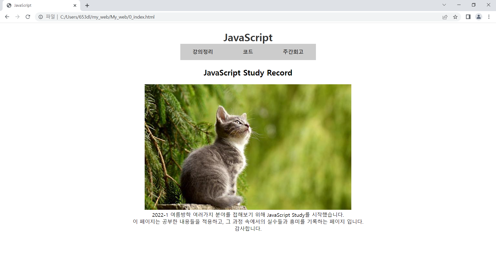

oss를 통해 다른 팀원들의 코드를 참고하고 얻어가고 공부한다.
이번주 또한 개강 준비로 바쁜 와중에 그랬지만 스스로가 아닌 함께 이번 경험으로 너무 좋은 경험을 얻었다.
여름방학 스터디를 마무리하면서 한참 부족했지만 값진 시간이다.

내일 개강이다. 그리고 모레가 마지막 스터디 미팅이다.
여름방학에 했던 스터디에 대해 생각을 해보면 가장 의미있고, 가장 많이 배웠다. 솔직히 게으른 것, 미루는 것을 조금이라도 억제하려고 노력할 수 있었고,
방학이라도 계속 공부할 수 있게되었다. 지금의 스터디원들에게 고마운 마음이 많이 들었다.